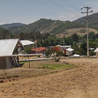
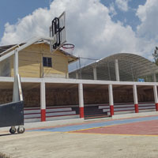
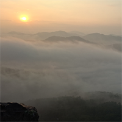

PRINCIPAL
HISTORIACURIOSIDADES UBICACION CONTACTO |
 |
se encuentra a aproximadamente 2,057 metros sobre el nivel del mar, por lo que tiene tiene un clima mas fresco que muchas otras comunidades. |
| cerca del 78% de la poblacion habla una lengua indigena, conservando tradiciones y conocimientos ancestrales. |
 |
 |
En invierno los campos de cañada candelaria amanecen pintados de blanco por la helada, no por nieve. |
|